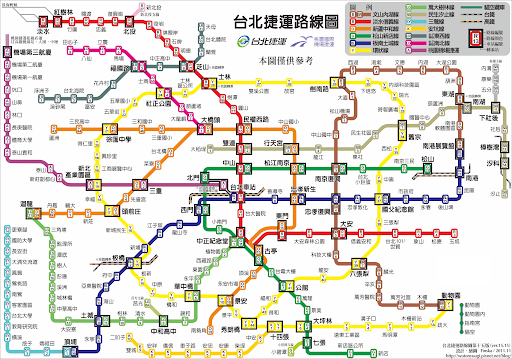
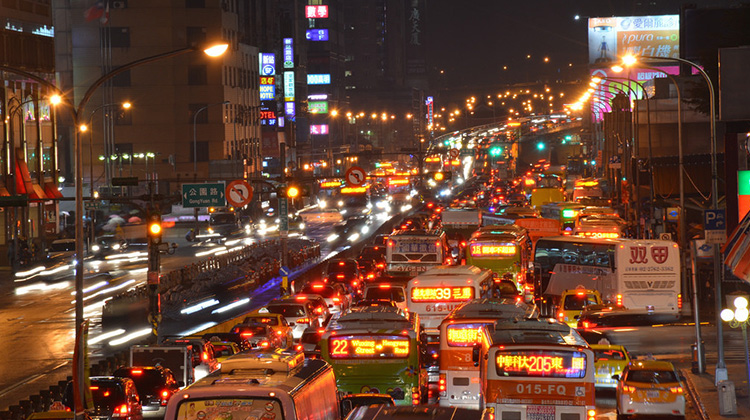
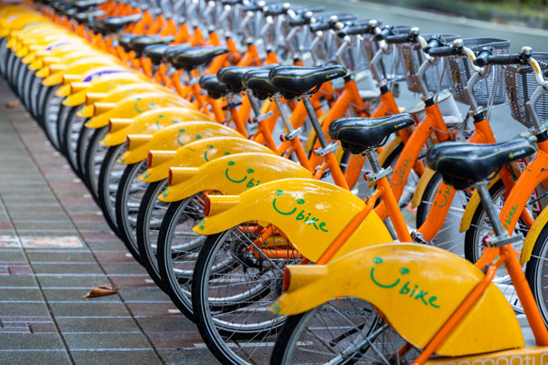

交通指南

台北捷運（MRT）は台北市内および新北市の主要な交通手段で、速くて便利な移動が可能です。
台北捷運公式サイト

台北市内には多くの公車路線があり、市内のどこへでも手軽にアクセスできます。悠遊卡を使用すると、便利でお得に利用できます。
台北公車公式サイト

Ubikeは台北市と新北市で広く利用されている公共自転車システムです。市内の様々な場所にUbikeステーションが設置されており、手軽に自転車を借りて観光を楽しめます。
Ubike公式サイト